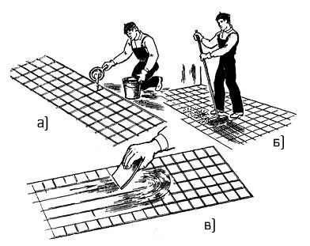

-

8(0152)31-25-61
-

kst@ggkst.by
-

http://ggkst.by
8(0152)31-25-61
kst@ggkst.by
http://ggkst.by
Карта 11: Заполнение швов и отделка плиточных покрытий
Состав технологический операций. Приготовление пластичного цементного раствора; заливка швов между плитками; очистка и промывка покрытия пола.
Рис. 1. Отделка плиточных покрытий: а - заливка швов раствором, б - распределение раствора щеткой; в - то же, шпателем
Инструменты, приспособления, инвентарь. Отделочный ковш; лопатка плиточная; растворная лопата; ведро; лейка; щетка; кисть-макловица;
емкость для древесных опилок.
Материалы. Цемент; древесные опилки; ветошь; 3 %-ный раствор соляной кислоты.
На отделку 100 м2 покрытия расход цементного молока - 0,03 м3, опилок- 0,1 м3.
Схема организации рабочего места. У места работ располагают все необходимые инструменты, приспособления, инвентарь и материалы.
Последовательность выполнения технологических операций. Работы начинают через 1…2 сут. после укладки покрытия.
Приготовление пластичного цементного раствора. Для заполнения швов шириной 2 мм приготовляют пластичный цементный раствор состава 1:1 на мелкозернистом
песке. Для заполнения швов шириной 1 мм приготовляют цементное молоко.
Заливка швов между плитками. Жидкий раствор или цементное молоко разливают ковшом (рис. 1) и равномерно распределяют по покрытию щеткой (рис. 1, б)
или шпателем с резиновой вставкой (рис. 1, в), заполняя швы. Излишки раствора удаляют до начала его схватывания.
Рис. 2. Очистка покрытия: а - протирка поверхности влажными опилками, б - удаление остатков схватившегося раствора
Очистка и промывка покрытия пола. После схватывания раствора в швах покрытие протирают влажными опилками, ветошью (рис. 2, а) и промывают водой.
Следы схватившегося раствора или потеки краски счищают металлическим скребком (рис. 2, б) ими удаляют 3%-ным раствором соляной кислоты.
Для защиты от загрязнения при производстве последующих отделочных работ покрытие засыпают влажными опилками слоем толщиной 1,5...2 см,
что способствует также твердению раствора.
Контроль качества. Швы должны быть заподлицо с поверхностью покрытия заполнены раствором (ширина швов - не более 2 мм). Не допускаются
пропуски в заполнении швов. Покрытие не должно иметь загрязнений и заметных пятен.
Трудовые затраты. Норма времени на 100 м2 покрытия - 5,2 чел-ч. Норма выработки на 1 чел-дн - 153 м2.
Техника безопасности. Очищают покрытия раствором соляной кислоты в резиновых перчатках и защитных очках. При работе с кислотой не
допускается употреблять дубовые опилки для очистки плиток.
Контрольные вопросы. Когда приступают к заполнению швов в свежеуложенном покрытии? Какой срок необходим для выдерживания плиточного покрытия?
Из каких операций состоит отделка плиточных покрытий? Как очищают покрытия, загрязненные остатками раствора или краской? Зачем после укладки
керамических плиток покрытие засыпают слоем влажных опилок? Какие правила техники безопасности соблюдают при очистке покрытия раствором соляной кислоты?
Карта 12 — Покрытие полов синтетическими плитками